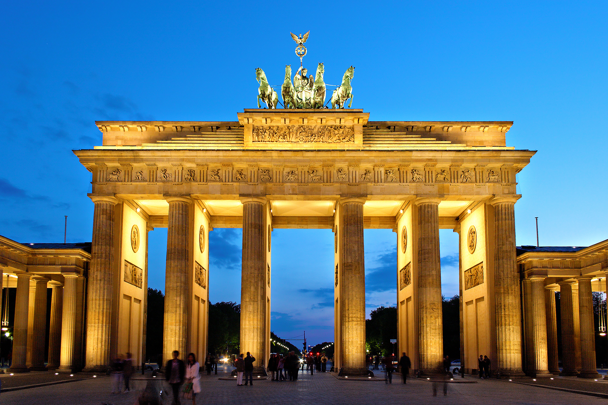

Germany Landmarks

Neuschwanstein Castle
Neuschwanstein Castle is a 19th-century historicist palace on a rugged hill above the village of Hohenschwangau near Füssen in southwest Bavaria, Germany. The palace was commissioned by King Ludwig II of Bavaria as a retreat and in honour of Richard Wagner. Ludwig chose to pay for the palace out of his personal fortune and by means of extensive borrowing, rather than Bavarian public funds. Construction began in 1869, but was never fully completed. The castle was intended as a private residence for the King, until he died in 1886. It was open to the public shortly after his death. Since then more than 61 million people have visited Neuschwanstein Castle. More than 1.3 million people visit annually, with as many as 6,000 per day in the summer.
Brandenburg Gate
The Brandenburg Gate is an 18th-century neoclassical monument in Berlin, built on the orders of Prussian king Frederick William II after restoring the Orangist power by suppressing the Dutch popular unrest. One of the best-known landmarks of Germany, it was built on the site of a former city gate that marked the start of the road from Berlin to the town of Brandenburg an der Havel, which used to be the capital of the Margraviate of Brandenburg. It is located in the western part of the city centre of Berlin within Mitte, at the junction of Unter den Linden and Ebertstraße, immediately west of the Pariser Platz. One block to the north stands the Reichstag building, which houses the German parliament. The gate is the monumental entry to Unter den Linden, a boulevard of linden trees which led directly to the royal City Palace of the Prussian monarchs.
Reichstag Building
The Reichstag is a historic government building in Berlin which houses the Bundestag, the lower house of Germany's parliament. It was constructed to house the Imperial Diet of the German Empire. It was opened in 1894 and housed the Diet until 1933, when it was set on fire. In World War II, during the Battle of Berlin, the building was severely damaged by the Soviet Red Army. After the War, the building fell into disuse; the parliament of the German Democratic Republic met in the Palast der Republik in East Berlin, while the parliament of the Federal Republic of Germany met in the Bundeshaus in Bonn. The ruined building was made safe against the elements and partially refurbished in the 1960s, but no attempt at full restoration was made until after German reunification on 3 October 1990, when it underwent a reconstruction led by architect Norman Foster.
Berlin Cathedral
The Berlin Cathedral, also known as, the Evangelical Supreme Parish and Collegiate Church, is a monumental German Evangelical church and dynastic tomb on the Museum Island in central Berlin. Having its origins as a castle chapel for the Berlin Palace, several structures have served to house the church since the 1400s. The present collegiate church was built from 1894 to 1905 by order of German Emperor William II according to plans by Julius Raschdorff in Renaissance and Baroque Revival styles. The listed building is the largest Protestant church in Germany and one of the most important dynastic tombs in Europe. In addition to church services, the cathedral is used for state ceremonies, concerts and other events. Since the demolition of the Memorial Church section on the north side by the East German authorities in 1975, the Berlin Cathedral has consisted of the large Sermon Church in the center, and the smaller Baptismal and Matrimonial Church on the south side and the Hohenzollern crypt, which covers almost the entire basement. Damaged during the Allied bombing in World War II, the cathedrals original interior was restored by 2002.
Europa-Park
Europa-Park is the largest theme park in Germany, and the second most popular theme park in Europe, after Disneyland Paris. Europa-Park is located in Rust, south-western Germany, between Freiburg im Breisgau and Strasbourg. The park is home to 13 roller coasters, the oldest, which opened in 1984, is the Alpenexpress Enzian, which is a powered coaster that speeds through a diamond mine. Europa-Park has very high capacity roller coasters and attractions, meaning the park can accommodate approximately 60,000 guest per day. The park counted 5.75 million visitors in 2019. It is also the location of the Euro Dance Festival. The resort occupies roughly 95 hectares. It hosts six hotels, one campground, and one movie theater.

Museum Island
The Museum Island is a museum complex on the northern part of the Spree Island in the historic heart of Berlin. It is one of the most visited sights of Germany's capital and one of the most important museum sites in Europe. Built from 1830 to 1930 by order of the Prussian Kings according to plans by five architects, Museum Island was designated a UNESCO World Heritage Site in 1999 because of its testimony to the architectural and cultural development of museums in the 19th and 20th centuries. It consists of the Altes Museum, the Neues Museum, the Alte Nationalgalerie, the Bode-Museum and the Pergamonmuseum. As Museum Island includes all of Spree Island north of the Unter den Linden, the Berliner Dom is also located here, near the Lustgarten.